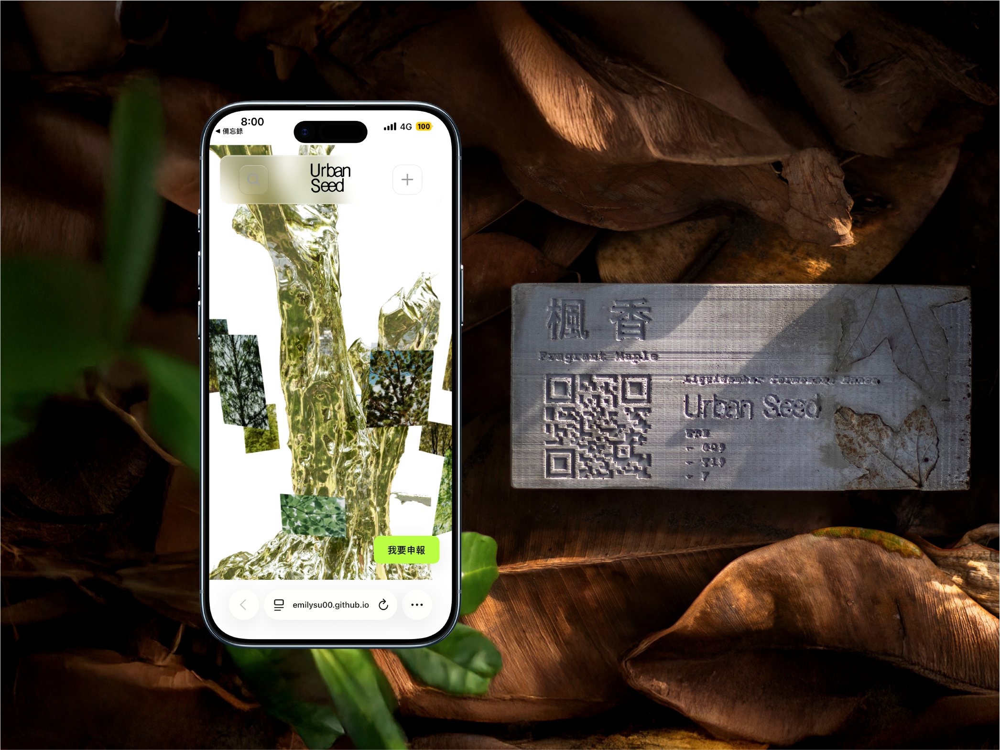
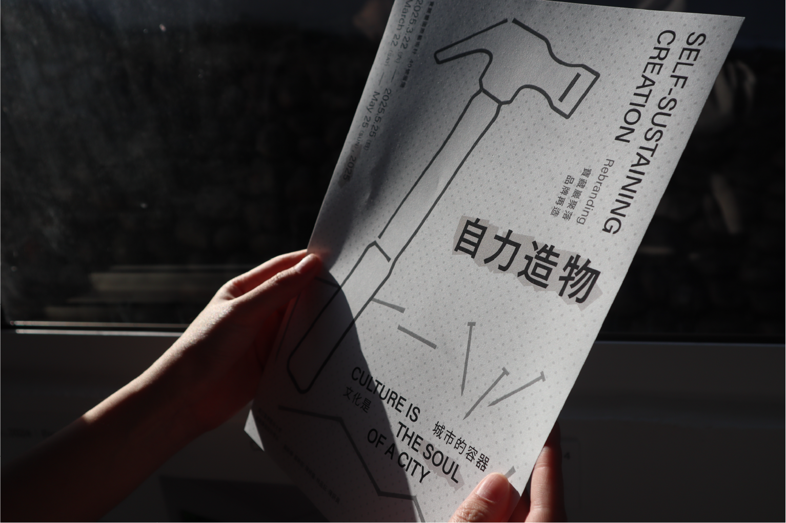
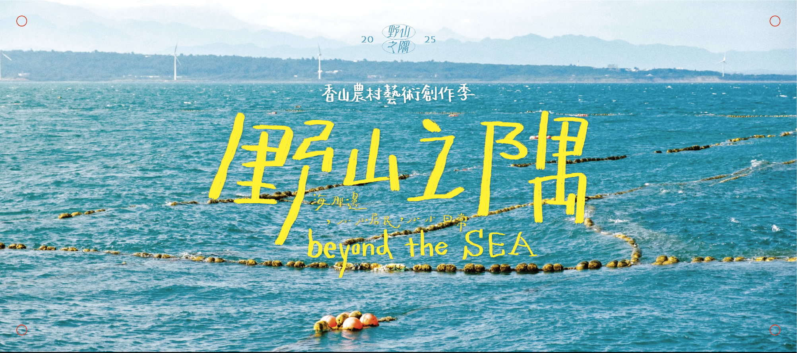
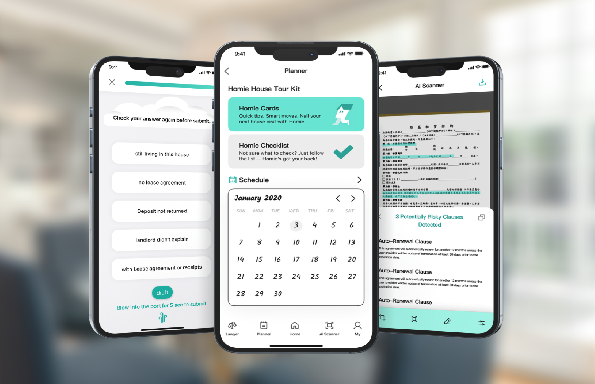
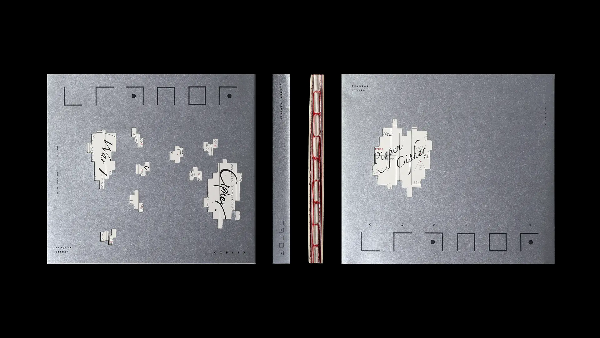
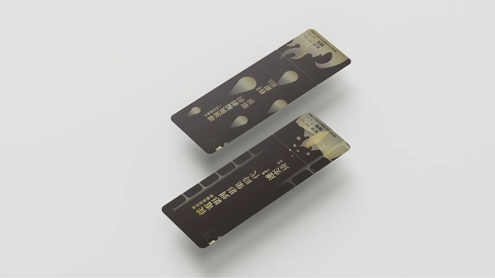

Safe Track
Taipei Metro Go App Redesign
Interactive design responding to urban commuting anxiety.
This project focuses on how people perceive risk and safety in high-density public transportation. By reorganizing scattered safety information into a clear and actionable interface, Safe Track helps commuters make informed decisions without increasing cognitive load.

Urban Seed
Designing Action within Urban Space
An interactive project addressing street tree issues in cities.
Urban Seed creates accessible reporting entry points and a structured workflow to help citizens participate in urban tree maintenance. The system translates fragmented public observations into information that governments can better understand and act upon.

Treasure Hill Artist Village Rebranding
A spatial branding project for an artist village.
Through field research and on-site observation, this project rethinks the brand positioning of Treasure Hill Artist Village. Cultural narratives and visual identity are integrated into the environment, allowing the brand to become part of everyday spatial experience.

Beyond the Sea
the corner of fields and SEA
A community-based exhibition and cultural intervention.
This project engages the Xiangshan area through exhibitions, guided walks, and local markets. By activating everyday spaces, it encourages both residents and visitors to reconnect with local culture and reconsider their relationship with the land.

Down Go
Mountain First Aid
A gamified learning platform for hiking safety.
Using pixel art and game-based interaction, Down Go transforms hiking guidelines and emergency self-rescue knowledge into an engaging learning experience. The project aims to reduce the distance between users and critical safety information.

Suncrest
Drip Bag Coffee Branding
Brand identity design for a drip coffee brand.
Starting from brand positioning and competitor analysis, Suncrest builds its identity around the local flavor of Taimali. The visual system extends from the imagery of the sun, creating a warm and recognizable brand language.

Homie
A Support System for Young Renters
A service design project supporting young renters.
Homie addresses information overload and emotional stress in the rental process. Through guided interactions, it helps users organize rental experiences, reduce decision-making friction, and connect with external support when legal issues arise.

Cipher
Book Design
A book design inspired by cryptography and intelligence systems.
Cipher explores the relationship between codes, warfare, and information through visual language. The design uses black, gray, and white as the base, with red accents to symbolize alerts, risk, and critical data.

Guangfu VI Extension Design
Visual extensions for a film festival identity.
Building on the main visual system, this project develops ticket designs and related materials. A black-and-gold palette creates a restrained yet ceremonial atmosphere, enhancing audience engagement and brand presence.